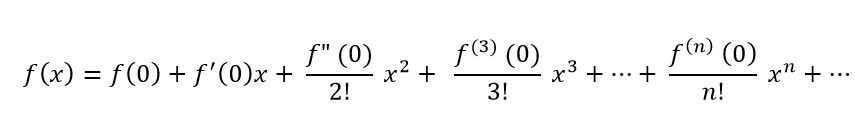

Error in Numerical Computations¶
Nama : Yogi Widyanto
NIM : 180411100049
Materi¶
-
Error atau Galat¶
Error / Galat merupakan perbedaan antara hasil penyelesaian suatu model matematik secara numeric dengan penyelesaian secara analitis. Kesalahan yang terjadi sangatlah penting, karena kesalahan dalam pemakaian algoritma pendekatan akan menyebabkan nilai kesalahan yang besar. Sehingga pendekatan metode numerik selalu membahas tingkat kesalahan dan tingkat kecepatan proses yang akan terjadi.
-
Round of Error¶
Perhitungan dengan metode numerik hampir selalu menggunakan bilangan riil. Masalah timbul bila komputasi numerik dikerjakan oleh mesin (dalam hal ini komputer) karena semua bilangan riil tidak dapat disajikan secara tepat di dalam komputer. Sebagai contoh 1/6 = 0.166666666…
-
Truncation Error¶
Kesalahan pemotongan terjadi ketika suatu rumus komputasi disederhanakan dengan cara membuang suku yang berderajat tinggi.Metode numerik menggunakan pendekatan untuk menyelesaikan masalah. Kesalahan yang diperkenalkan oleh aproksimasi adalah kesalahan pemotongan. Rumus Truncation errors :

-
Deret Maclaurin¶
Deret Maclaurin sangat berguna dalam komputasi numerik dalam menghitung nilai - nilai fungsi yang susah dihitung secara manual. Contoh sin(x), cos(x), e^x
berikut algoritma mclaurin

Deret MacLaurin biasa disebut sebagai deret Taylor baku, kerena deret maclaurin merupakan standar atau dasar yang berlaku dengan a=0. Atau persamaan Deret MacLaurin diatas dapat ditulis seperti berikut $$ f(x) = \sum \limits_{i=0}^{n} {f^i(0)x^i \over i!} $$
Hasil Code¶
Berikut implementasi deret maclaurin¶
import math
print("Soal : e^(3x)")
print(" ")
x = 1
var = 1
fa=1
kondisi = True
while kondisi==True :
f=((3**var)*(x**var))/math.factorial(var)
fnew=fa+f
test=fnew-fa
print("s",var,"=",fa)
print("s",var+1 ,"=",fnew)
print("selisih : ",test)
print("--------------------------------------------------")
if test <=0.0001 :
break
else :
fa+=f
var+=1
print("")
print ('total iterasi : ',var)
print ('untuk x =',x)
hasil dari program diatas
Soal : e^(3x)
s 1 = 1
s 2 = 4.0
selisih : 3.0
--------------------------------------------------
s 2 = 4.0
s 3 = 8.5
selisih : 4.5
--------------------------------------------------
s 3 = 8.5
s 4 = 13.0
selisih : 4.5
--------------------------------------------------
s 4 = 13.0
s 5 = 16.375
selisih : 3.375
--------------------------------------------------
s 5 = 16.375
s 6 = 18.4
selisih : 2.0249999999999986
--------------------------------------------------
s 6 = 18.4
s 7 = 19.412499999999998
selisih : 1.0124999999999993
--------------------------------------------------
s 7 = 19.412499999999998
s 8 = 19.846428571428568
selisih : 0.4339285714285701
--------------------------------------------------
s 8 = 19.846428571428568
s 9 = 20.009151785714284
selisih : 0.162723214285716
--------------------------------------------------
s 9 = 20.009151785714284
s 10 = 20.063392857142855
selisih : 0.05424107142857082
--------------------------------------------------
s 10 = 20.063392857142855
s 11 = 20.079665178571425
selisih : 0.016272321428569825
--------------------------------------------------
s 11 = 20.079665178571425
s 12 = 20.08410308441558
selisih : 0.004437905844156376
--------------------------------------------------
s 12 = 20.08410308441558
s 13 = 20.08521256087662
selisih : 0.001109476461039094
--------------------------------------------------
s 13 = 20.08521256087662
s 14 = 20.08546859390609
selisih : 0.0002560330294691937
--------------------------------------------------
s 14 = 20.08546859390609
s 15 = 20.08552345812669
selisih : 5.4864220601302804e-05
--------------------------------------------------
total iterasi : 14
untuk x = 1
Penjelasan¶
import math # import module math
print("Soal : e^(3x)")
print(" ")
x = 1 # nilai x
var = 1 # untuk jumlah iterasi dan juga pangkat
fa=1 # nilai f awal
kondisi = True # kondisi awal untuk looping
while kondisi==True :
f=((3**var)*(x**var))/math.factorial(var) # f=3^var*(x^var)/(var!) atau turunanya
fnew=fa+f # fnew untuk menjumlahkan fa dengan f selanjutnya
test=fnew-fa # mengetahui selisih
print("s",var,"=",fa)
print("s",var+1 ,"=",fnew)
print("selisih : ",test)
print("--------------------------------------------------")
if test <=0.0001 : # jika selisih <= 0.0001 maka break
break
else :
fa+=f # jika tidak fawal diganti f
var+=1 # var ditambah 1
print("")
print ('total iterasi : ',var)
print ('untuk x =',x)